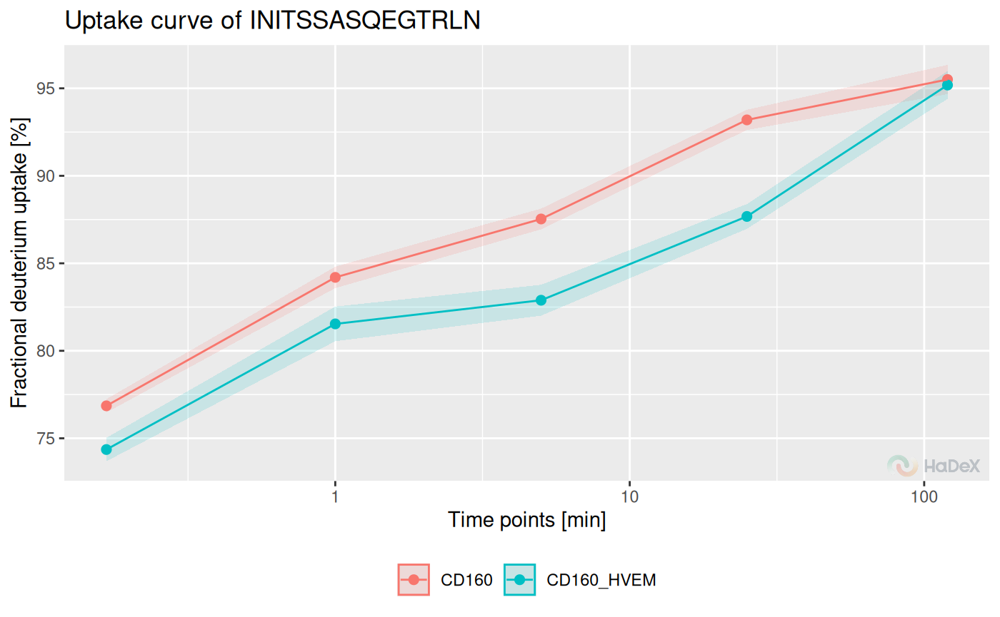
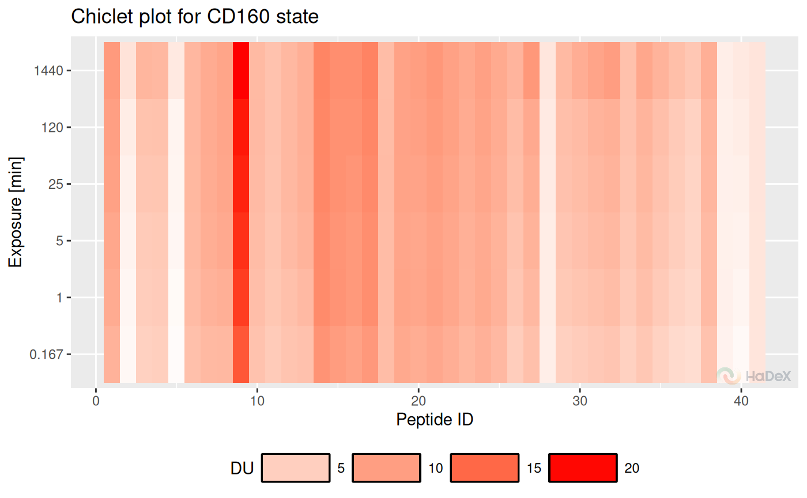

Code usage
usage.RmdConvention
Purpose of groups of functions in the package:
- calculate_* - calculates one specific value. e.q. deuterium uptake values for specific time point.
- create_* - creates a dataset for set of values e.q. multiple time points.
- plot_* - plots a visualization of provided data, accepts calculate_* and create_* outputs.
- show_* - subsets the dataset to show specific values, accepts calculate_* and create_* outputs.
Variables:
- deut_uptake - deuterium uptake [Da]
- frac_deut_uptake - fractional deuterium uptake [%]
- theo_deut_uptake - theoretical deuterium uptake [Da]
- theo_frac_deut_uptake - theoretical fractional deuterium uptake [%]
- diff_deut_uptake - differential deuterium uptake [Da]
- frac_diff_deut_uptake - theoretical differential fractional deuterium uptake [%]
- theo_diff_deut_uptake - differential deuterium uptake [Da]
- theo_frac_diff_deut_uptake - theoretical differential fractional deuterium uptake [%]
Example of use
Read data file
dat <- read_hdx(system.file(package = "HaDeX", "HaDeX/data/KD_180110_CD160_HVEM.csv"))
# dat %>%
# calculate_state_uptake() %>%
# plot_state_comparison()
dat %>%
calculate_peptide_kinetics(protein = "db_CD160",
sequence = "INITSSASQEGTRLN",
start = 1,
end = 15,
states = c("CD160", "CD160_HVEM"),
time_0 = 0.001, time_100 = 1440) %>%
plot_uptake_curve(fractional = TRUE)## Warning in log(x, base): NaNs produced
dat %>%
calculate_peptide_kinetics(protein = "db_CD160",
sequence = "INITSSASQEGTRLN",
start = 1,
end = 15,
states = c("CD160", "CD160_HVEM"),
time_0 = 0.001, time_100 = 1440) %>%
show_uptake_data(fractional = TRUE)## Protein Sequence ID Modification State Start End Exposure
## <char> <char> <int> <lgcl> <char> <int> <int> <num>
## 1: db_CD160 INITSSASQEGTRLN 1 NA CD160 1 15 0.167
## 2: db_CD160 INITSSASQEGTRLN 1 NA CD160 1 15 1.000
## 3: db_CD160 INITSSASQEGTRLN 1 NA CD160 1 15 5.000
## 4: db_CD160 INITSSASQEGTRLN 1 NA CD160 1 15 25.000
## 5: db_CD160 INITSSASQEGTRLN 1 NA CD160 1 15 120.000
## 6: db_CD160 INITSSASQEGTRLN 1 NA CD160_HVEM 1 15 0.167
## 7: db_CD160 INITSSASQEGTRLN 1 NA CD160_HVEM 1 15 1.000
## 8: db_CD160 INITSSASQEGTRLN 1 NA CD160_HVEM 1 15 5.000
## 9: db_CD160 INITSSASQEGTRLN 1 NA CD160_HVEM 1 15 25.000
## 10: db_CD160 INITSSASQEGTRLN 1 NA CD160_HVEM 1 15 120.000
## Frac DU [%] U(Frac DU) [%]
## <num> <num>
## 1: 76.8561 0.3832
## 2: 84.1962 0.6111
## 3: 87.5333 0.5943
## 4: 93.1959 0.5786
## 5: 95.5038 0.8333
## 6: 74.3584 0.6689
## 7: 81.5377 0.9895
## 8: 82.8900 0.8820
## 9: 87.6782 0.7086
## 10: 95.1868 0.7919Different forms of visualization
Create data frame with uptake values for state in all time points:
uptake_dat <- create_state_uptake_dataset(dat)Butterfly:
plot_butterfly(uptake_dat)## Warning: Using `size` aesthetic for lines was deprecated in ggplot2 3.4.0.
## ℹ Please use `linewidth` instead.
## ℹ The deprecated feature was likely used in the HaDeX2 package.
## Please report the issue to the authors.
## This warning is displayed once every 8 hours.
## Call `lifecycle::last_lifecycle_warnings()` to see where this warning was
## generated.
Chiclet:
plot_chiclet(uptake_dat)## Warning: The `size` argument of `element_rect()` is deprecated as of ggplot2 3.4.0.
## ℹ Please use the `linewidth` argument instead.
## ℹ The deprecated feature was likely used in the HaDeX2 package.
## Please report the issue to the authors.
## This warning is displayed once every 8 hours.
## Call `lifecycle::last_lifecycle_warnings()` to see where this warning was
## generated.